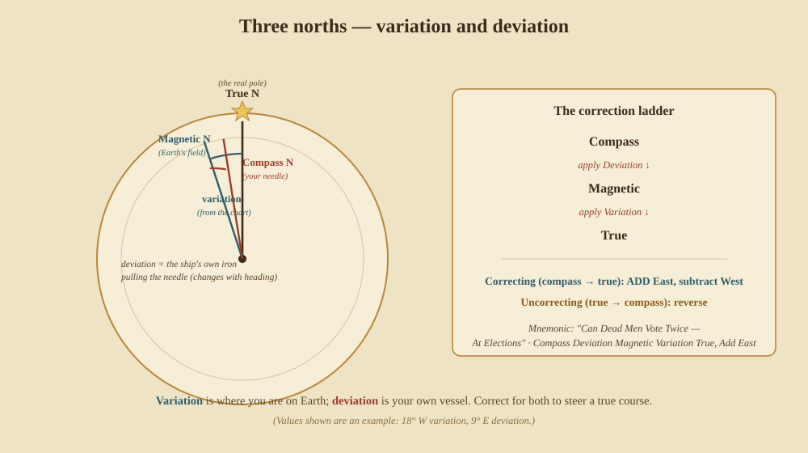
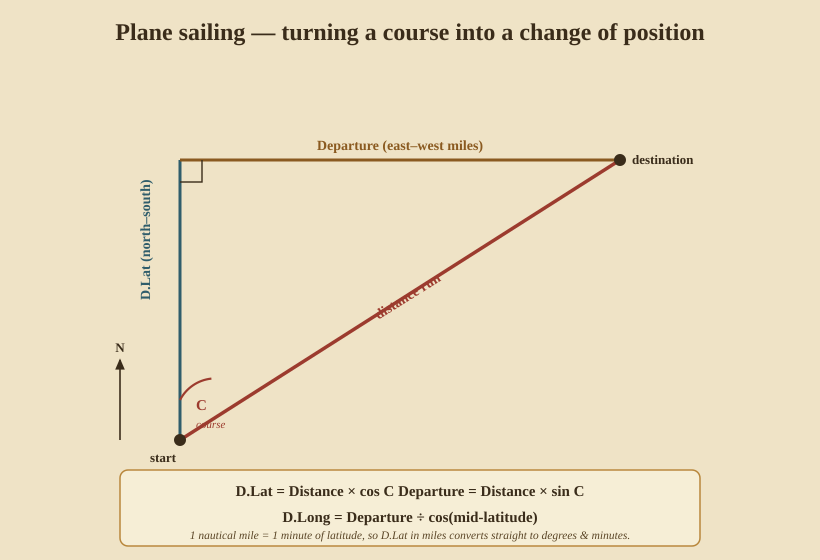
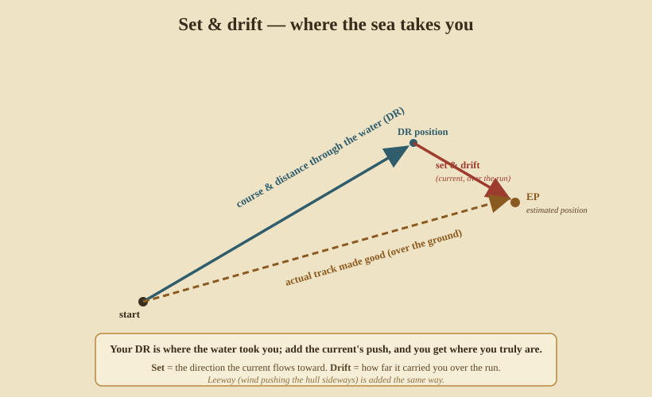

Dead Reckoning
Sights are occasional; the sea is continuous. Between fixes — and through every night, fog, and overcast when no body can be shot — the navigator keeps position by dead reckoning (DR): from a known start, apply the course steered and the distance run, and keep a running estimate of where you are. DR was the everyday backbone of navigation, used far more hours than the sextant, and a good DR is what lets a single Sun line become a fix.
It rests on three things: knowing your speed, knowing your direction, and the trigonometry that turns course and distance into change of position.
16. Speed and distance — the log and the knot
To reckon distance you must measure speed. The old way is beautifully direct: the chip log. A wedge of wood on a long line is thrown over the stern; the line has knots tied at even intervals, and a sand glass times a fixed interval. Count the knots that run out in that time, and that is your speed — which is why a ship’s speed is given in knots to this day.
The intervals are chosen so the arithmetic vanishes: with knots about 47 feet 3 inches apart and a 28-second glass, one knot run out per glass = one nautical mile per hour. Heave the log every hour (or every change of speed), write it in the log-book, and the day’s run adds up.
Who & when. The chip log and knotted line came into use in the 16th–17th centuries; before it, speed was judged by eye (“Dutchman’s log” — time a chip of wood passing between two marks on the rail).
17. The compass — variation and deviation
Direction comes from the magnetic compass, but the needle does not point to true north. Two separate errors stand between the card and the truth:

- Variation — the angle between true north and magnetic north, because the Earth’s magnetic pole isn’t the geographic one. It depends on where you are and is printed on the chart (and drifts slowly year to year). This is the same quantity the sky-map calls “magnetic variation.”
- Deviation — the angle between magnetic north and where your compass points, because the ship’s own iron pulls the needle. It depends on the ship’s heading and is tabulated on a deviation card swung for that vessel.
To go from what you steer to a true course (correcting) you climb the ladder Compass → Magnetic → True, applying deviation then variation; to turn a desired true course into a compass course to steer (uncorrecting) you go back down. The sign rule: correcting, add easterly errors and subtract westerly; uncorrecting, reverse. The old mnemonic runs the ladder up: “Can Dead Men Vote Twice — At Elections” (Compass, Deviation, Magnetic, Variation, True; Add East).
Who & when. The magnetic compass reached European ships around the 12th century (from China, where it was used for navigation by the Song dynasty). Columbus recorded variation across the Atlantic in 1492. Deviation only became pressing with iron ships: Matthew Flinders identified the hull-iron effect (the vertical “Flinders bar” still corrects it), and George Airy worked out the compensating-magnet system in the 1830s.
18. The sailings — course and distance into position
Given a course and a distance, how far north and how far east have you gone? For short runs you may treat the patch of sea as flat — plane sailing — and solve a right triangle:

- Difference of latitude:
D.Lat = Distance × cos(Course)(north–south). - Departure:
Dep = Distance × sin(Course)(east–west miles). - Difference of longitude:
D.Long = Departure ÷ cos(mid-latitude)— because the meridians crowd together as you go poleward, so a mile of easting is more than a minute of longitude except on the equator (this refinement is mid-latitude sailing).
Since 1 nautical mile = 1 minute of latitude, D.Lat in miles converts
straight to degrees and minutes of latitude.
Worked example. You steer 040° T and run 60 nautical miles, in the region of latitude 50°:
D.Lat = 60 × cos40° = 60 × 0.766 = 46.0′ N→ your latitude increases 0° 46′.Dep = 60 × sin40° = 60 × 0.643 = 38.6 nm east.D.Long = 38.6 ÷ cos50° = 38.6 ÷ 0.643 = 60.0′ = 1° 00′ E.
The family of sailings, in increasing accuracy and range:
- Plane sailing — one flat right triangle; fine for a short leg.
- Traverse sailing — sum many short legs of different courses (a traverse table does the trig), the natural fit for a day of tacking; the sums give one net D.Lat and departure.
- Mid-latitude sailing — the departure-to-D.Long correction above, good for moderate runs.
- Mercator sailing — uses meridional parts (from tables) to get D.Long exactly over long distances on a Mercator chart, where a straight course line (a rhumb line) can be plotted directly.
- Great-circle sailing — the shortest path over the globe, which on a Mercator chart is a curve; sailed as a series of rhumb-line legs approximating the arc.
Who & when. Plane and traverse sailing were worked out in the 16th–17th centuries. The Portuguese mathematician Pedro Nunes studied the rhumb line and great circles in the 1530s; Gerardus Mercator’s 1569 projection made rhumb lines straight, and Edward Wright (1599) supplied the mathematics of meridional parts that Mercator sailing needs.
19. Set, drift, and leeway — the sea’s own vote
Your DR assumes you go where you point at the speed you log. The sea disagrees: current carries the whole water mass, and wind shoves the hull sideways (leeway). Both are added to the DR as vectors:

- Set — the direction the current flows toward.
- Drift — how far it carried you over the run (its speed × the time).
Lay off your through-the-water DR track, then from its end lay off the current’s set and drift; the line from your start to that new point is your track made good over the ground, and the endpoint is your estimated position (EP) — a DR honest about the sea. Leeway is added the same way, as a small angle downwind of your heading.
A navigator’s habit: trust the EP as the working truth, but treat it as provisional until the next fix confirms or corrects it — the discipline of doubt from the book’s preface.